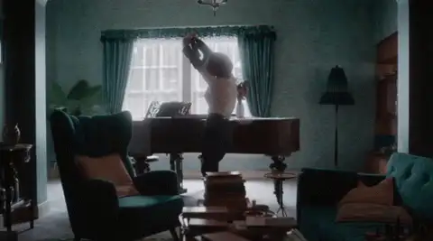
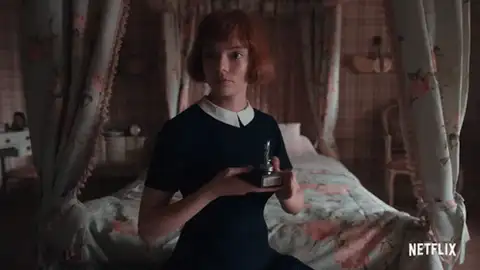

Diario de un Robot · 8 de noviembre de 2020November 8, 2020
Gambito de Dama o cómo empezar a soñar con partidas de ajedrez
La jugada de Netflix para avivar una chispa desconocida u olvidada: el ajedrez.
This essay is only available in Spanish for now.
I consider 'The Queen's Gambit' a tribute to brainy women. I like Beth for her bravery and intelligence. In the past, many women have had to hide their brains, but not today. — Walter Tevis, The New York Times (1983)
Gambito de Dama es la última miniserie de Netflix basada en la novela The Queen’s Gambit (1983) de Walter Tevis. Luego de varios intentos de realización, ha logrado llegar a nuestras pantallas con la interpretación estelar de Anya Taylor-Joy. En tan solo siete capítulos somos introducidos en la vida de la ajedrecista Beth Harmon: desde su ingreso en un orfanato a los ocho hasta el pico de su carrera a los 22.
Vi esta serie con Ana, y esta semana escribimos juntos. Devoramos siete horas de contenido en menos de una semana, es probable que les dure aún menos si la enganchan un finde libre de responsabilidades. La serie tiene drama, comedia y cada partida maneja una tensión insospechada para el deporte representado. El gusto que nos generó permanece después de haberla terminado y nos invitó a volver al ajedrez, que habíamos dejado en la infancia. Con tan solo aprender algunas cosas logramos hipnotizarnos en nuestras partidas reales.
Esta biopic está tan cargada de verdad que no supimos, hasta los títulos finales, que no se trataba de una historia real. Vamos entonces a hablar de la estética de la ficción, lo único de la narrativa y cómo interaccionan vida y arte.
And that’s all films are. Just an extension of childhood, where everybody wants to be freer, everybody wants to be powerful, everybody wants to be so overwhelmingly attractive that there’s just no doing anything about it. Or everybody wants to have comradeship and to be understood. —** Marlon Brando
¿Por qué nos atrae tanto la ficción? Definitivamente hay algo en su estética que nos captura y logra atraparnos. Desde los ojos hipnóticos de Beth Harmon (Anya Taylor-Joy), hasta la mirada severa de Vasily Borgov (Marcin Dorociński), pasando por el encantador Townes (Jacob Fortune-Lloyd), que nos recuerda a un joven Superman. Los sets y vestuarios de los 60 logran incluso rivalizar con las maravillosas escenografías de Mad Men, así como el desarrollo paralelo de Alma Wheatley (Marielle Heller) hace eco de los dramas de la familia Draper. Hay cierto placer estético que el arte reivindica, los personajes son bellos y hasta la fealdad es puesta en buena luz.
Cinema is an old whore, like circus and variety, who knows how to give many kinds of pleasure. —** Federico Fellini
En la ficción, incluso los momentos malos están salpimentados, confiamos en el éxito del personaje, esperamos el final feliz. Que gane, que la apoyen, que supere la adicción. La puerta al subsuelo abre una realidad paralela fuera del tiempo: el sótano húmedo y oscuro donde Beth encuentra al Sr. Schaibel (Bill Camp) se convierte en un lugar mágico donde aprende a jugar con tan solo mirar. Su cara resaltada bajo la luz de una única lamparita, la cara inmortalizada del encargado ordenando su rendición. Una de nuestras secuencias favoritas fue la espiral destructiva de Beth, musicalizado por “Venus” de Shocking Blue; incluso la decadencia puede ser hermosa. Presenciamos los prejuicios de otros jugadores y comentaristas por su género y disfrutamos cuando, luego, los destruye en el tablero, dejando olvidada la ficticia diferencia de género. El punto de vista feminista tuvo sus críticos y defensores allá por el 1983, cuando se publicó la novela.
For an actress to be a success she must have the face of Venus, the brains of Minerva, the grace of Terpsichore, the memory of Macaulay, the figure of Juno, and the hide of a rhinoceros. —** Ethel Barrymore
Ambas caras del atractivo estético son posibles gracias a la dirección de Scott y a la actuación de Anya y el resto del elenco. La capacidad de una obra de tomar vida no puede ser diseccionada a sus partes más pequeñas, es imposible reducir su éxito a un solo elemento. La narración emerge de un guión excelente donde la tensión nunca desaparece y cada herramienta es utilizada para avanzar la trama. Toda esta construcción se basa en el trabajo impresionante de Anya, quien se pone la producción al hombro. Su actuación es fluida y encarna de forma realista un personaje difícil, la personalidad de la ajedrecista no permite ser tomada a la ligera. Además, no solo es la protagonista, sino que rara vez la cámara la abandona. Aunque, como verán a lo largo de la serie, la dama tiene detrás indispensables figuras de apoyo; comenzando por Jolene (Moses Ingram), luego Harry Beltik (Harry Melling) y Benny Watts (Thomas Brodie-Sangster). La ficción desarrolla su mejor juego gracias a un impresionante elenco.

As regards plots I find real life no help at all. Real life seems to have no plots. — Ivy Compton-Burnett
Lo más valioso de la ficción es su capacidad de convertirse en narrativa. Mientras seguimos la serie nos damos cuenta de algo: la vida de Beth Harmon tiene sentido. De allí surge la duda: ¿lo tiene la nuestra? Al sucederse los episodios en orden cronológico, con la excepción de algún flashback, podemos distinguir un claro norte en su vida. La situación inicial, el llamado a la aventura y las peripecias se hacen presentes. Vemos el camino de la heroína. No es solo a Borgov a quien debe derrotar, sino la pulsión autodestructiva que lleva dentro. Ver la serie nos invita a imaginar cómo hubiese sido adoptar otra estrategia, cómo fueron las cosas, las causas y consecuencias de las movidas que realizamos.
Truth is always strange;
Stranger than fiction.
— Lord Byron
Así como el ajedrez tiene sus reglas y es autocontenido, lo mismo pasa con la ficción. Al contrario, la vida no tiene por qué ajustarse a lo probable, lo supuesto o lo que “tiene sentido”. Las historias personales no tienen una narrativa clara y esperable. No tenemos iguales condiciones iniciales, ni reglas aparentes sobre cómo nos desarrollaremos. Mientras que la partida de ajedrez permite encontrar lógica, estrategia y movimientos predecibles, nosotros tenemos que jugar sin anotar, con las luces apagadas y, a veces, hasta con las manos atadas. Lo atractivo de la ficción es la presencia de sentido que nos incita a buscarlo en nuestras vidas, aunque sepamos que se trata de una invención propia.
But you look at Apollo, and he looks back at you. The poet Rilke looked at a statue of Apollo about fifty years ago, and Apollo spoke to him. "You must change your life," he said. When true myth rises into consciousness, that is always its message. You must change your life. —** Ursula K. Le Guin
Esta capacidad de hilar es contagiosa. Si ponemos nuestro pasado bajo escrutinio comenzamos a conectar los puntos hacia atrás. Es así como, al terminar la serie, buscamos nuestros momentos clave, el día en que empezamos con nuestro deporte favorito, la primera victoria en algún juego o esa sensación genial cuando finalmente hallamos nuestro verdadero gusto. Las narrativas del arte no son solo valiosas por su entretenimiento y placer estético, nos hablan directamente y provocan cambios insospechados.

The poet is, etymologically, the maker. [...] Experience is not what happens to a man; it is what a man does with what happens to him. — Aldous Huxley
La obra siempre está nutrida por la vida del autor, pero es difícil hablar de autor en una adaptación. El escritor de la novela, Walter Tevis, no solo tuvo dificultades de niño, asociadas con pastillas y enfermedad, sino que también fue jugador amateur de ajedrez. En su entrevista para The New York Times cuenta cómo ganó 250 dólares en un torneo durante su niñez. Tiene otras obras asociadas al juego y se vuelca con esmero en sus personajes. Podemos decir lo mismo de Scott Frank y Allan Scott, quienes investigaron con dedicación el tema y contaron entre sus asesores a nada menos que Garry Kasparov y Bruce Pandolfini. Gambito de Dama logra así ser una de las mejores representaciones del deporte hasta ahora.
(…)
También el jugador es prisionero
(la sentencia es de Omar) de otro tablero
de negras noches y de blancos días.
Dios mueve al jugador, y éste, la pieza.
¿Qué Dios detrás de Dios la trama empieza
de polvo y tiempo y sueño y agonía?
— Ajedrez, J.L. Borges
Más allá del esfuerzo y la capacidad de los autores y realizadores en crear esta historia, hay un punto donde solo se trata de nosotros frente a la pantalla, solo las imágenes que se deslizan en el televisor pueden ser analizadas. El texto —o en este caso serie— existe por su cuenta y es autocontenido, el detrás de escena queda por fuera y es ajeno a la experiencia. Vimos la serie prácticamente de un tirón. La racionalización, la búsqueda de veracidad, referencias e inspiraciones son posteriores. Gambito de Dama funciona porque parece auténtica, verdadera, y, en el espectáculo, parecer es ser. El autor se convierte así en una figura accesoria, la experiencia es la nuestra con la pantalla, el mundo se queda afuera.
To read fiction means to play a game by which we give sense to the immensity of things that happened, are happening, or will happen in the actual world. By reading narrative, we escape the anxiety that attacks us when we try to say something true about the world. This is the consoling function of narrative — the reason people tell stories, and have told stories from the beginning of time.— Umberto Eco
Por último, hay un fenómeno que muchas veces no notamos: la vida imita al arte. En el momento en que terminó la serie y la pantalla se puso negra, nos vimos las caras y, todavía emocionados con un gran final, fuimos directo a desempolvar el olvidado juego de ajedrez. Cuando nos dimos cuenta, llevábamos ya tres partidas y varias horas dentro. A la mañana siguiente nos descubrimos el uno al otro buscando estrategias para ganar, desde el obvio Mate del Pastor hasta principios básicos de aperturas, tácticas y estrategias. Es tal el poder de la ficción que puede cambiar incluso más que nuestro día. Primero, se destaca la capacidad de contagiar el amor por el juego, abandonado desde la infancia. Luego, la capacidad ejemplar de Beth, desde seguir su pasión, su lucha interna y su notable esfuerzo. Por último, la sensación de que podemos acercar un poco más nuestra vida a nuestras fantasías.
My father said "When in doubt, castle." — Kurt Vonnegut
Ya finalizando recomendamos la serie con mucho entusiasmo. Son siete horas que realmente valen la pena. Se nota el esfuerzo de quienes la realizaron y puede dejar una marca significativa en quien la mire.
Para quienes ya la hayan visto espero que les haya gustado. Si quedaron igual de alucinados sepan que nosotros empezamos a jugar en internet —particularmente cómodo para estas épocas— y en el celular. Pueden entrar a chess.com (no podía ser más fácil), hacerse una cuenta y enseguida empezar. Sobran recursos para aprender, ya sea desde internet, libros o su grandmaster amigue. Con refrescar los rudimentos y dedicando un par de horas descubrimos el placer de ver y entender una partida de grandes jugadores. Pueden incluso ver recreadas las partidas de la serie a la perfección.
Si les gustó la serie tanto como a nosotros es probable que disfruten The Queen’s Gambit, la novela, acá una reseña en español. Si todavía no te manejás del todo con el inglés (está la traducción, llamada Gambito de Reina, pero no sabemos qué tal es) podés ir antes a La Defensa de Vladimir Nabokov, otra ficción cuyo protagonista tiene sus similitudes o, para una lectura breve, el poema “Ajedrez” de Borges. También nos recomendaron La Tabla de Flandes de Arturo Pérez-Reverte y Novela de ajedrez de Stefan Zweig.
Nos vemos la semana que viene,
Fidel y Ana.